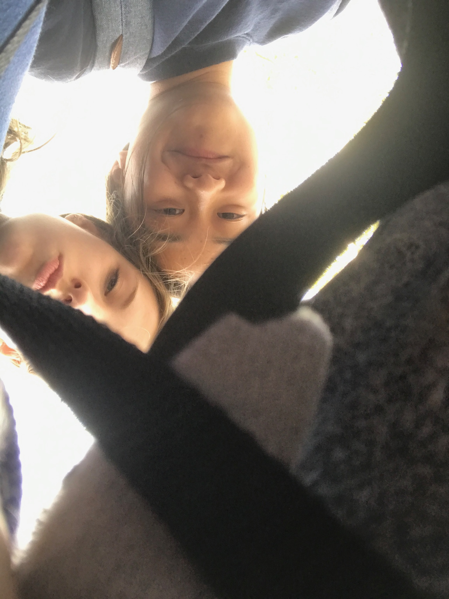
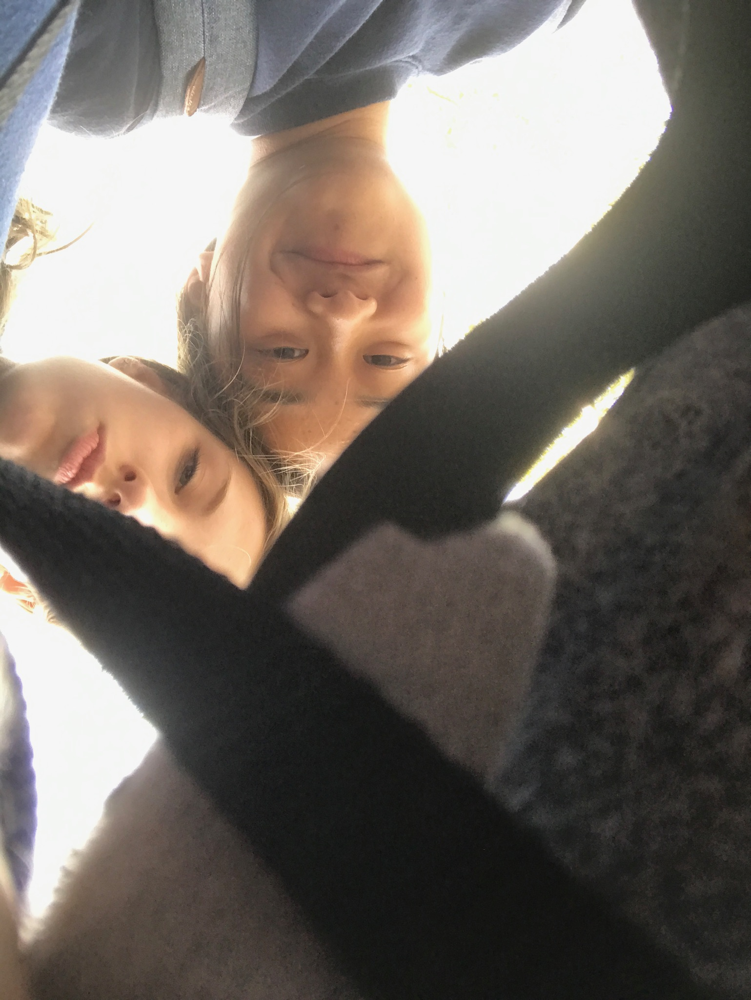

The day we actually talked and rekindled things at after prom. I don't think I need to explain much here, but one things
led to another and the rest is history.
June 20th, 2019
Our first date this summer! Some pho and a walk in prospect park!
I held you hand for the first time in a long time and it just made me feel so warm inside again.
The feelings were all too familiar. After our long stroll, we sat down at a bench right outside of Bricc and just talked
about everything and anything that came to mind. I don't quite remember who
was performing, but best nose bleed seats in the house!

June 28th, 2019
This was the day before you left for Spain. We decided to go to the lag grad party together. (same place, but a diff day lol)
We made plans to get dinner beforehand with Lok, but she was at a different resutarant location than us. We ended up going to this cute
little thai food place on the lower east side close to the party. Best pad thai handsdown!! Thank you for holding me up that night.
July 9th, 2019
You came back from Spain!! We went mini golfing by Pier 25. After that we went to Chelsea Market and got fat witch and some tacos.
We walked to Chelsea pier to see watch the sunset, but we were a tad bit late because the sun had already set. However, the sky
was so beautiful with bright strokes of pink and purple. We both got attacked by mosquitoes that night (we're talking 40+ bites
all over my legs) and had to run to Duane Reade (or maybe it was CVS) to pick up some cream.


July 12th, 2019
I just so happened to be in your area so we made plans to hang for a bit after work. I brought you some pizza and berries and we just chilled in Prospect Park
after you finished work. This day was very iconic because a bird pooped on your head. lol. I'm sorry about that, but hey ! good luck am i right?
July 23rd, 2019
We went to Bryant park to sketch and then took the train down to Chelsea market because I wanted to get fat witch again lol (maybe $1.50 brownies after 5 pm will be our thing :')).
We walked the highline and listened to that weird music/performance thing and perfect timing because the sun was setting and it was just so nice ahh !!! *photo below* We walked from
14th all the way down to 31st street (a quick stop on 24th by the anagram clock) and sat down at a bench facing the ugliest road. It started light drizzling a bit, but it didn't bother us.

July 24th, 2019
After art endorsement celebration, we went to Central Park and walked around until we got to Sheeps Meadow
and talked for a bit. It was getting dark and it felt like we were in a movie scene-- fireflies flickering around us and our lovely mosquitoes friends (of course). Eventually,
they had to close the field, so we went to one of my favorite rocks and just hung out there while we still got rekt by mosquitoes.
August 1st, 2019
Took you to Spumoni Garden because you have never tried Brooklyn's best pizza and I had to take you there. We should check up
on our good old pal there to see if he's still tryinging to hang out with us lol. We took the train back to the Slopes and
hung around for a bit and talked before my dad started calling me to come home.

August 4th, 2019
Very iconic day-- Obama's birthday !!! Afterward the little birthday celebration for our freaking king, we took the train downtown to our stop, but we passed by High Street
and I asked you if you wanted to walk the Brooklyn Bridge. Without hesitation, we hopped off the
cart and our spontenous trip on the Brooklyn Bridge to Manhattan began. We also began a handshake (this had yet to be finished) Towards the end of our trek,
we sat down on a bench and just had some sad boi hour time. Ah man. ah.

August 6th, 2019
We went to the park slope diner for some early din din. Not even going to lie, but
that is one of the best diner's I've been too! The people were so nice that they gave us free donuts. After that we
went to Mac Demarco concert! We def weren't going to pay $50+ for tickets, no no. Instead, we just sat outside
and listened to our man, demarco sing (or should I say scream?) We started dancing in the middle of the field because Mosquitoes
were really come from me. It was just us standing in the middle of a wide grassy field and it also felt as though we
were in a movie scene.

August 9th, 2019
We went to see HER in concert... JK we didn't lol. We did pay a visit to Laguardia though.

August 10th, 2019
Summer Streets and green necks. That's all I'm going to say lol.

August 12th, 2019
We went to see a movie on Pier 17 ! I forgot waht the movie was called but it was the one with the old miley and liam.
It was kinda funny because they recently broke up around that time diromg the showing. That lady was so nice to offer us two seats lol .
You are also so slow at Monopoly Deal, but it's fine lol. We walked the Brooklyn Bridge again, but from Manhattan to Brooklyn.
It was a nice walk across and I think walking the Brooklyn Bridge at night has become one of my favorite
things and most memorable event.

August 14th, 2019
We had a spontenous hang out at Bryant Park with your mom. Oh wait.. sorry, you mom couldn't make it.
You told me you were a robot/computer and little did you know, so was I! HAHA. For some reason, we thought it would
be a good idea to walk all the way from Bryant to Columbus Circle at 11PM... I honestly don't know why we thought that
was a good idea lol. But yes, fun night with a smashed apple and dart vanilla.

August 16th, 2019
We got pastaaaah at one of my favorite pasta place! After that,
we went to Washington Park and talked about our future and about us. I also almost lost my phone so um I'm glad
that no one stole it lol. I spotted the strangers project and I brought you over to check it out. The one story
that really stood out to me (and probs you as well) was the doctor one. After I read it, I immediately thought of you
and knew that that was going to be you in the future! (saving lives and being amazing).
August 25th, 2019
Our last time seeing eachother this summer. Our day started off on your rooftop and taking a nice little stroll
with Nemo around the slopes. We citibiked from the Slopes to Fairway. From there, we biked to the pier and caught the
ferry in time to Govenor's Island. We then biked around for a bit and climbed on the big rock hill. We then laid down
on a grassy area and spilled some hot tea while we ate our lunch. Our trip ended with us back in the city, getting Panna II
(quite disappointed with the food im sorry), and saying our beautiful farewells by the pier. :'). I wanted to the
lincoln center fountain one last time, but it freaking wasn't even on when we went because of OPPPERRRAAAA A!

Some Fun Stats from our time together this summer:
Number of times we hung out: 20
Time Spent on Facetime: (lemme figure that out)
Number of Mosquitoes Bites: 80+
Number of burtsbee chapstick I've tried: 9
Number of Wholesome sent and received: 25+
You are
There will always be a piece of you in almost everywhere I go in New York City.
Come visit me in minnesota or whatever i guess lol. Maybe I'll pull up to New Hampshire sometime :T.
I hope we stay friends in college and make more mems !! So much love to you! Dartmouth doesn't know what's coming ;)
July 24th, 2019
After art endorsement celebration, we went to Central Park and walked around until we got to Sheeps Meadow and talked for a bit. It was getting dark and it felt like we were in a movie scene-- fireflies flickering around us and our lovely mosquitoes friends (of course). Eventually, they had to close the field, so we went to one of my favorite rocks and just hung out there while we still got rekt by mosquitoes.
August 1st, 2019
Took you to Spumoni Garden because you have never tried Brooklyn's best pizza and I had to take you there. We should check up on our good old pal there to see if he's still tryinging to hang out with us lol. We took the train back to the Slopes and hung around for a bit and talked before my dad started calling me to come home.
August 4th, 2019
Very iconic day-- Obama's birthday !!! Afterward the little birthday celebration for our freaking king, we took the train downtown to our stop, but we passed by High Street
and I asked you if you wanted to walk the Brooklyn Bridge. Without hesitation, we hopped off the
cart and our spontenous trip on the Brooklyn Bridge to Manhattan began. We also began a handshake (this had yet to be finished) Towards the end of our trek,
we sat down on a bench and just had some sad boi hour time. Ah man. ah.
August 6th, 2019
We went to the park slope diner for some early din din. Not even going to lie, but
that is one of the best diner's I've been too! The people were so nice that they gave us free donuts. After that we
went to Mac Demarco concert! We def weren't going to pay $50+ for tickets, no no. Instead, we just sat outside
and listened to our man, demarco sing (or should I say scream?) We started dancing in the middle of the field because Mosquitoes
were really come from me. It was just us standing in the middle of a wide grassy field and it also felt as though we
were in a movie scene.
August 9th, 2019
We went to see HER in concert... JK we didn't lol. We did pay a visit to Laguardia though.
August 10th, 2019
Summer Streets and green necks. That's all I'm going to say lol.
August 12th, 2019
We went to see a movie on Pier 17 ! I forgot waht the movie was called but it was the one with the old miley and liam.
It was kinda funny because they recently broke up around that time diromg the showing. That lady was so nice to offer us two seats lol .
You are also so slow at Monopoly Deal, but it's fine lol. We walked the Brooklyn Bridge again, but from Manhattan to Brooklyn.
It was a nice walk across and I think walking the Brooklyn Bridge at night has become one of my favorite
things and most memorable event.
August 14th, 2019
We had a spontenous hang out at Bryant Park with your mom. Oh wait.. sorry, you mom couldn't make it.
You told me you were a robot/computer and little did you know, so was I! HAHA. For some reason, we thought it would
be a good idea to walk all the way from Bryant to Columbus Circle at 11PM... I honestly don't know why we thought that
was a good idea lol. But yes, fun night with a smashed apple and dart vanilla.
August 16th, 2019
We got pastaaaah at one of my favorite pasta place! After that,
we went to Washington Park and talked about our future and about us. I also almost lost my phone so um I'm glad
that no one stole it lol. I spotted the strangers project and I brought you over to check it out. The one story
that really stood out to me (and probs you as well) was the doctor one. After I read it, I immediately thought of you
and knew that that was going to be you in the future! (saving lives and being amazing).
August 25th, 2019
Our last time seeing eachother this summer. Our day started off on your rooftop and taking a nice little stroll
with Nemo around the slopes. We citibiked from the Slopes to Fairway. From there, we biked to the pier and caught the
ferry in time to Govenor's Island. We then biked around for a bit and climbed on the big rock hill. We then laid down
on a grassy area and spilled some hot tea while we ate our lunch. Our trip ended with us back in the city, getting Panna II
(quite disappointed with the food im sorry), and saying our beautiful farewells by the pier. :'). I wanted to the
lincoln center fountain one last time, but it freaking wasn't even on when we went because of OPPPERRRAAAA A!

Some Fun Stats from our time together this summer:
Number of times we hung out: 20
Time Spent on Facetime: (lemme figure that out)
Number of Mosquitoes Bites: 80+
Number of burtsbee chapstick I've tried: 9
Number of Wholesome sent and received: 25+
You are
There will always be a piece of you in almost everywhere I go in New York City.
Come visit me in minnesota or whatever i guess lol. Maybe I'll pull up to New Hampshire sometime :T.
I hope we stay friends in college and make more mems !! So much love to you! Dartmouth doesn't know what's coming ;)
August 10th, 2019
Summer Streets and green necks. That's all I'm going to say lol.
August 12th, 2019
We went to see a movie on Pier 17 ! I forgot waht the movie was called but it was the one with the old miley and liam. It was kinda funny because they recently broke up around that time diromg the showing. That lady was so nice to offer us two seats lol . You are also so slow at Monopoly Deal, but it's fine lol. We walked the Brooklyn Bridge again, but from Manhattan to Brooklyn. It was a nice walk across and I think walking the Brooklyn Bridge at night has become one of my favorite things and most memorable event.
August 14th, 2019
We had a spontenous hang out at Bryant Park with your mom. Oh wait.. sorry, you mom couldn't make it. You told me you were a robot/computer and little did you know, so was I! HAHA. For some reason, we thought it would be a good idea to walk all the way from Bryant to Columbus Circle at 11PM... I honestly don't know why we thought that was a good idea lol. But yes, fun night with a smashed apple and dart vanilla.